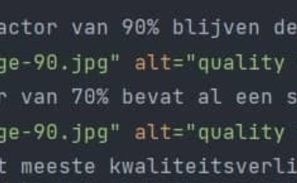

Bij een quality factor van 90% blijven de meeste details behouden, de origine bestandsgrootte is 236 KB en nu is dit iets minder
Een quality factor van 70% bevat al een stuk minder detail maar je hebt een kleinere bestandsgrootte, namelijk 110KB
Bij 40% heb je het meeste kwaliteitsverlies maar is de bestandsgrootte maar 63KB, wat ongeveer 25% van het origineel is
Bij het compressen van een jpg bestand met tekst, zie je dat de tekst waziger komt en er wazige vlekken rondom de tekst beginnen te komen
